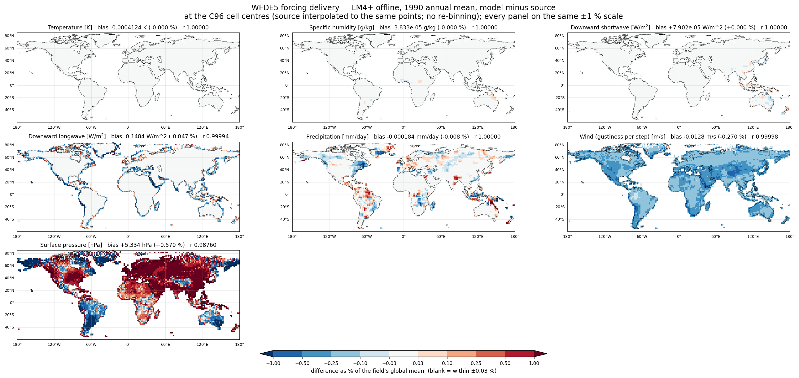

작업요약_ERA5_CLM_forcing.html)을 대체함.
다중 LSM(CLM5 · LM4+ · Noah-MP · JULES · LIS)의 공통 forcing으로 채택. ERA5를 CRU 관측으로 bias 보정한 0.5° hourly 지면 forcing이다.
area_conserve_remap_Wrap regrid로
+12 W/m² SW bias가 생겼다. WFDE5는 0.5° native라 regrid 자체가 불필요하므로 이 오차가 원천 차단된다.
모델 간 비교가 과제의 핵심이므로 모든 LSM이 같은 원자료를 먹는 것이 설계 요구사항이다.
| 항목 | 값 |
|---|---|
| 버전 / 기간 | v3.0, 1979–2024 (46년) |
| 해상도 | 0.5° (360×720), land-only — 유효격자 35.8 % |
| 원본 시간 | hourly, 월별 파일 Var_WFDE5_CRU_YYYYMM_v3.0.nc |
| 좌표 | lon −180~180 (CLM/GSWP3는 0–360 → 변환 시 flip) |
| 결측 | ocean = 1e20 fill (ERA5는 1e36) |
| 자료형 | float (packed 아님 → cdo 안전) |
| 용량 | 원본 368 zip = 8변수 × 46년, 584 GB |
| 8변수 | SWdown · LWdown · Tair · Qair · PSurf · Wind · Rainf · Snowf |
dataset : derived-near-surface-meteorological-variables product : "wfde5" ← 누락 시 400 "invalid combination" version : "3_0" ← 언더스코어. "3.0" / "2.1" 은 400 reference_dataset : "cru" (1979–2024 전체) / cru_and_gpcc (2016까지, precip 정밀)
ecmwf.datastores.Client(url, key).get_collection(ds).formloginctl enable-linger 필수) / macclimate:/data2/ydkoh/WFDE5/, 백업 mac:/Volumes/data02/WFDE5/size > 1MB skip guard로는 못 거른다 → 재다운로드.cesm/wfde5/wfde5_6h_parallel.sh: zip 해제 → cdo timselmean,6 (8병렬) → /data2/ydkoh/WFDE5_6h/{var}/Rainf도 kg m⁻² s⁻¹ = flux이므로 평균.
(ERA5 tp는 누적이라 합산이었다)analysis/wfde5_to_clm5.nclYYYY_wfde5.nc에 7변수 + LONGXY/LATIXY/EDGE + noleap time/data2/ydkoh/2026_MOF_LSM/Atm_forc/1_CLM_WFDE5/ — 연 10.6 GB × 46 ≈ 490 GBPRECTmms = Rainf + Snowf (둘 다 mm/s, 단위환산 불필요 — 이미 LSM-ready)lonFlip → 0–360 (GSWP3 셀과 셀단위 일치)proleptic_gregorian → drop_feb29 → 연 1460 steplm4/scripts/lm4p_offline_wfde5_to_atm.py위 CLM 포맷 → LM4 offline(FMS data_table) 대기 강제장으로. 달력은
v.calendar = tvar.calendar로 상속되어 모델도 NOLEAP이 된다.
area_conserve_remap 금지 — land-only fill 오염WFDE5는 ocean = 1e20 fill이라 remap이 fill을 전 격자에 섞어 결과가 전부 fill이 된다. ERA5는 전구 완전자료라 remap이 OK였던 것. WFDE5 grid == GSWP3 0.5°(lonFlip 후 셀 일치)이므로 remap 생략, 직접 대입이 정답.
/data2/ydkoh/2026_MOF_LSM/wfde5_to_clm5.ncl은 옛 remap 버전.
로컬 git analysis/wfde5_to_clm5.ncl이 검증본이다.GSWP3 ESMFmesh는 elementMask가 전 격자 valid(100 %)인데 WFDE5는 valid 35.8 %.
이 mesh로 bilinear remap하면 연안에서 fill(1e20)이 육지로 섞여 모델 init read에서
MPI_ABORT(FP 트랩 없는 깨끗한 abort, UFS.F90 Initialize). _FillValue가 있어도 mesh mask가 valid면
remap이 포함시킨다.
해결 = WFDE5 land-mask mesh: GSWP3 mesh 복사 후 elementMask를 WFDE5 valid격자로 교체
(각 요소 centerCoords로 WFDE5 TBOT valid 직접조회 → flatten 순서 무관).
→ Atm_forc/wfde5_landmask_ESMFmesh.nc. 지리검증(사하라 land · 중태평양 ocean · 아마존 land) 통과.
CLM5도 동일 mesh 필수.
WFDE5가 한랭 대륙점(몽골·티벳·시베리아)에서 지표를 불안정 임계로 몰아 escomp 크래시, t_ca NaN.
근본원인은 &surface_flux_nml의 gustiness 하한 부재(무풍·안정조건에서 난류교환→0,
지표-대기 decoupling → 복사냉각 런어웨이).
FIX(namelist만): alt_gustiness=.TRUE. + gust_const=3.0.
→ 다른 LSM도 WFDE5로 갈아탈 때 같은 종류 주의.
gustiness fix 후 연 전환(1982-01-01)에서 탄소보존 FATAL(diff 6.6e-6 = roundoff). GSWP3 1년 테스트는
run-end가 정확히 1982-01-01이라 그 체크를 밟지 않았다. FIX: carbon_cons_tol=1e-3,
water_cons_tol=1e-3.
WFDE5 레코드가 03/09/15/21 UTC(6h 중점)라 세그먼트가 03:00에서만 시작 가능
(current_date = Y,1,1,3,0,0 + force_date_from_namelist=.true.).
그 결과 월평균 구간도 03:00에 앵커되어, 세그먼트가 364d21h면 12월 구간이 3시간 모자라
매년 11개월만 기록되는 문제가 발생했다 → days=365로 수정해 해결(12개월 확보 검증 완료).
NCL이 파일 쓰는 중 읽으면 HDF error·0 K·변수누락으로 오판. 완성본만 검증
(HDF5_USE_FILE_LOCKING=FALSE 또는 완료 후 확인).
| 모델 | forcing | 상태 |
|---|---|---|
| LM4+ | WFDE5 | land-mask mesh + gustiness fix로 구동. 1981–1996 완주, 1997 진행 중 생산런 |
| CLM5 | WFDE5 | user_datm.streams.txt.CLMGSWP3v1.* 3개 교체, domain domain.lnd.360x720_wfde5.nc. LM4와 동일 원자료. BGC-AD spin-up 중 |
| Noah-MP | GSWP3 | 1° static-veg 2 cycle 수렴 완료. WFDE5 전환 예정 미전환 |
| JULES | ERA5 | 전구 맵런 완료. WFDE5로 spin-up 1회 추가 계획 미전환 |
모델 C96 격자점 위에서 비교했다. 원본 0.5°를 그 점들로 이중선형 보간(선형연산이라
보간(연평균) = 연평균(보간)이 정확히 성립). 출처: land_forcing(t·q·ps·wind),
land_daily(강수), land_month(복사).
| 변수 | bias | 상대 | r | 원본 공간sd 대비 |
|---|---|---|---|---|
| 기온 | −0.0004 K | −0.000 % | 1.00000 | 0.0025 % |
| 비습 | −4e−5 g/kg | −0.000 % | 1.00000 | 0.0007 % |
| 하향단파 | +8e−5 W/m² | 0.000 % | 1.00000 | 0.0002 % |
| 하향장파 | −0.148 W/m² | −0.047 % | 0.99994 | 0.20 % |
| 강수 | −0.0002 mm/day | −0.008 % | 1.00000 | 0.008 % |
| 바람 | −0.013 m/s | −0.270 % | 0.99998 | 0.98 % |
| 지표기압 | +5.33 hPa | +0.570 % | 0.98760 | 5.9 % |

flux_down_from_atmos가 data_override로 덮어쓰기 때문). 성능을 위해 복사 게이트를 막아 계산을 끈 것이
물리적으로 무해했다는 실측 증거가 된다.
data_table에 p_surf 주입 줄이 있는데도, 실제로는 상수 slp=101325와 모델 자기 지형고도에서
재구성된 값을 쓴다. 영향은 작다(0.57 % → 공기밀도 0.57 % → 플럭스 1 % 미만, 강제자료 자체의 불확실성보다 1~3자릿수 작음).
원인(do_atmos=.false.에서 override 적용 지점이 건너뛰어지는지)은 소스 확인 필요.
√(u²+gust²)를 계산해 평균하는데, 평균한 u에 씌우면 bias가 +1.64 %로 나온다.
같은 순서로 계산하면 −0.27 %. 원본을 30분으로 시간보간까지 하면 +0.006 % — 사실상 0.
(√가 볼록이라 Jensen 부등식, 부호까지 예측 가능)| 종류 | 경로 |
|---|---|
| 원본 zip | climate:/data2/ydkoh/WFDE5/ (584 GB) · 백업 mac:/Volumes/data02/WFDE5/ |
| 6h 평균 | climate:/data2/ydkoh/WFDE5_6h/{var}/ |
| CLM 포맷(공통) | climate:/data2/ydkoh/2026_MOF_LSM/Atm_forc/1_CLM_WFDE5/YYYY_wfde5.nc |
| LM4 포맷 | climate:/data2/ydkoh/lm4/forcing_WFDE5_lm4p/wfde5_atm_YYYY.nc (연 3.8 GB) |
| land-mask mesh | climate:/data2/ydkoh/2026_MOF_LSM/Atm_forc/wfde5_landmask_ESMFmesh.nc |
| 변환 스크립트 | analysis/wfde5_to_clm5.ncl (★검증본) · lm4/scripts/lm4p_offline_wfde5_to_atm.py |
| 다운로드·전처리 | cesm/wfde5/{dl_wfde5_*.py, wfde5_6h_parallel.sh} |
| 검증 스크립트 | lm4/scripts/{chk_forcing_native, chk_rad_native, plot_forcing_check_native}.py |